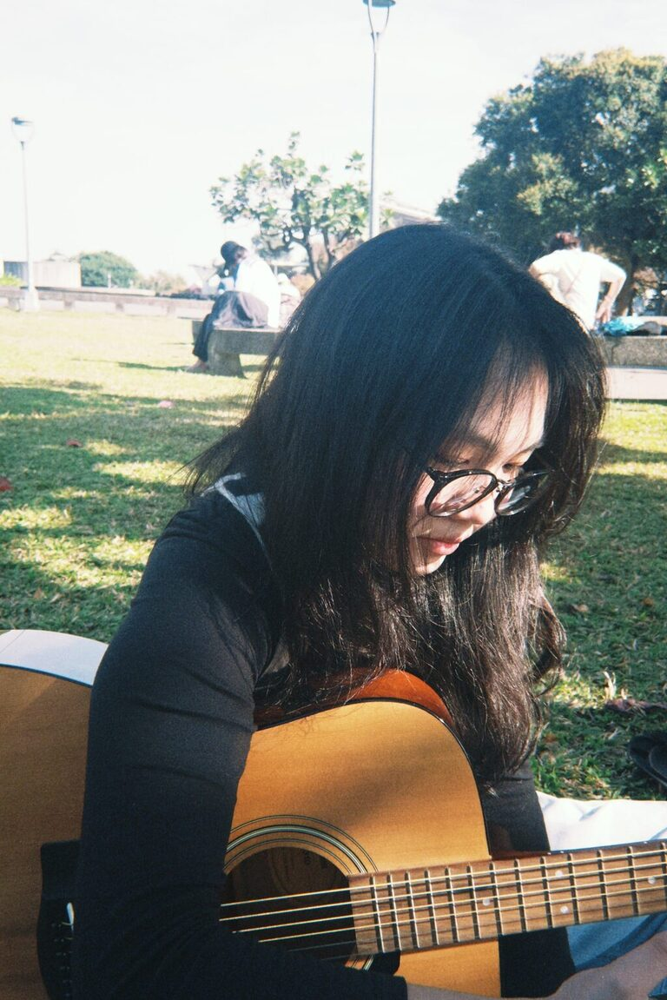

個人簡介
林小尋
拾玖歲，奔走於追尋與找尋。
學習歷程
就讀國立臺北教育大學社會與區域發展學系。
透過課程接觸網站設計、數位敘事與視覺呈現， 開始思考如何利用數位工具分享自己的觀察與想法。
個人定位
喜歡音樂與動畫， 興趣是躺在地上看書， 假日最常出沒於電影院， 夢想是暴富後開一間獨立書店。
習慣透過文字與影像記錄生活， 也對社會、文化與人之間的故事保持好奇。
未來目標
希望未來持續探索文化、影像與數位創作的可能。
累積更多表達與溝通能力， 也找到屬於自己的創作方式。
不管用文字抑或影像，
但願能記錄下不同階段眼中的世界。

拾玖歲，奔走於追尋與找尋。
就讀國立臺北教育大學社會與區域發展學系。
透過課程接觸網站設計、數位敘事與視覺呈現， 開始思考如何利用數位工具分享自己的觀察與想法。
喜歡音樂與動畫， 興趣是躺在地上看書， 假日最常出沒於電影院， 夢想是暴富後開一間獨立書店。
習慣透過文字與影像記錄生活， 也對社會、文化與人之間的故事保持好奇。
希望未來持續探索文化、影像與數位創作的可能。
累積更多表達與溝通能力， 也找到屬於自己的創作方式。